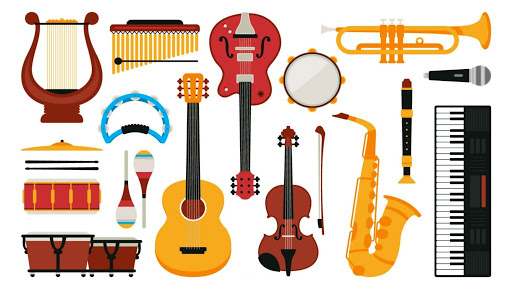

- INSTRUMENTOS MUSICALES -
Podemos definir un instrumento como cualquier objeto que es utilizado para algún fin por el ser humano. La clave de esta definición radica en que la propiedad del instrumento no es una característica propia del objeto sino que es brindada por el ser humano al conferirle un uso funcional. (En rigor, podríamos extender esta definición a cualquier especie animal.)
Si la música es el arte de organizar sonido (con el fin de expresar algo), podemos concluir que un instrumento musical es cualquier objeto que sea utilizado por el ser humano para producir sonidos en el marco de una creación musical. Es decir, potencialmente cualquier objeto es un instrumento musical.
Estudiar la física de los instrumentos musicales equivaldría entonces al estudio de las propiedades acústicas de todos los objetos, lo que no es una ayuda en la delimitación del objeto de estudio. En consecuencia, trataremos de estudiar las propiedades físicas (acústicas) de algunos objetos que han sido construidos (o utilizados) más frecuentemente como instrumentos musicales.

ACONTINUACIÓN SE LE PRESENTARA CUATRO OPCIONES A ADQUIRIR UN INSTRUMENTO: